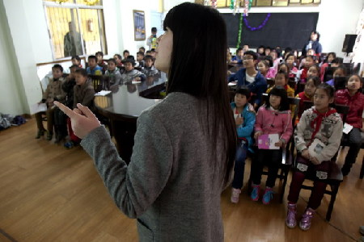
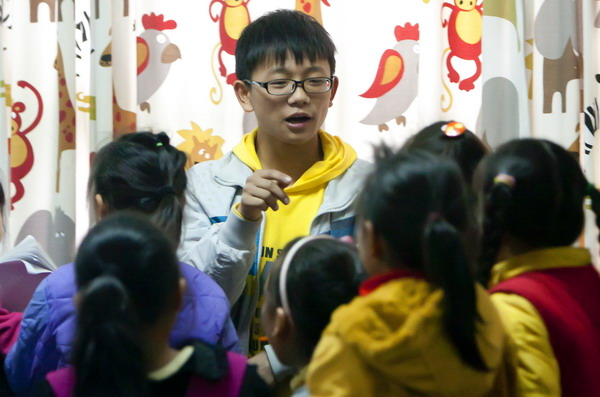
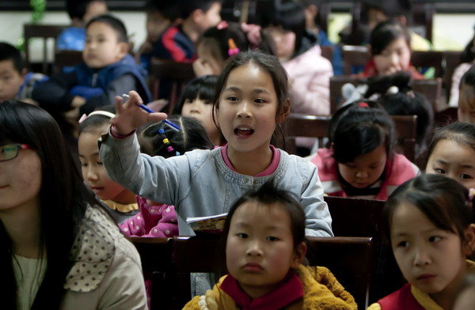
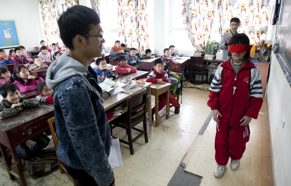
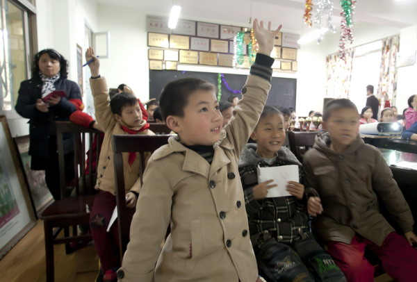

武大志愿者服务农民工子女学校 师生一对一帮扶
桂电志愿者网 日期：2015-04-17 来源：

志愿者在春苗学校给学生上课
“早穿皮袄午穿纱，围着火炉吃西瓜。小朋友们，你知道这是描述我国哪个地区的气候特点吗？”26日下午，来自武汉大学信息管理学院2014级女生王佳，走进武汉市江汉区春苗学校三（2）班，给40多名小学生上了一堂生动的新疆地理知识课。
这是武汉大学信息管理学院青年志愿者协会开展的助学活动之一，协会的在校学生利用课余时间，每周到春苗学校为小学生们服务一次，在智慧阅读、安全教育、素质拓展等方面，帮助小学生们健康成长。据了解，江汉区春苗学校是一家没有政府背景，专门为武汉市农民工子弟服务的民办学校，为打工子弟提供小学到初中9年制义务教育，在校农民工子女600多人。
谈到参与当天志愿者服务的收获，武汉大学信息管理学院2014级女生王佳说，已经到春苗学校助学两次，和孩子们在一起很开心，把自己学到的知识传给他们，觉得大学生活很充实。春苗学校的音乐老师肖世慧告诉记者，武汉有很多高校的年轻大学生走进春苗学校，把外面最新的理念和思维带给这些农民工的子女，可以开阔他们的视野，帮助他们从小树立理想，这对他们今后的成长，会有非常大的帮助。
武汉大学信息管理学院团委副书记张潘磊表示，该院发起的春苗学校志愿服务活动于2010年正式启动，本着“奉献、友爱、互助、进步”的志愿精神，旨在提高学生的知识素养，拓宽学生的视野。每个学期有90人以上的志愿者参与服务，实际帮扶到的春苗学校学生数百人。该活动被评为“武汉大学十大杰出志愿服务项目”，今后会在进一步提高志愿者服务质量上下功夫，切实帮助到这群农民工子女。

志愿者在春苗学校给小学生上课。

听课的学生举手回答问题。

志愿者在春苗学校给小学生上课。

听课的小学生举手回答问题。
【责任编辑：李想】